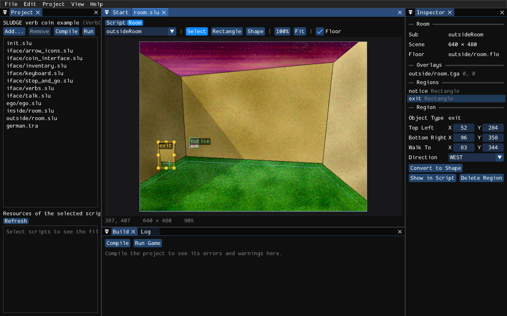

Screen regions are the parts of a room that the player can point at: a door, a notice, a duck. You make them with addScreenRegion, and you give it the corners of a rectangle, or the points of a shape, as numbers. Working those numbers out by hand means a lot of compiling, running, squinting and guessing. The room editor lets you draw them on the picture of the room instead.
There's no separate file for a room. The room editor reads the script itself: it finds the subs that set up rooms, draws the pictures they paste with addOverlay, and the regions they make. When you move or draw a region, it changes the numbers in the script. So your script is still the one place where your room lives, and what you type in the script shows up in the room editor straight away.
Open the script in the script editor, and click Room at the top of its tab (or choose Room Editor from the View menu). Script takes you back to the text. Pick the room you want from the list in the toolbar. This is the outside of the verb coin example, with the tunnel selected:

A room, as far as the editor is concerned, is a sub that calls addOverlay, mixOverlay, addScreenRegion or setFloor. Subs inside an objectType don't count, as those are what the player's clicks run, rather than rooms. The verb coin example has a sub for each room, which gotoRoom calls, and that works nicely:
sub outsideRoom () {
addOverlay ('outside/room.tga', 0, 0);
setFloor ('outside/room.flo');
addScreenRegion (notice, 140, 272, 165, 299, 140, 300, NORTH);
addScreenRegion (exit, 52, 284, 96, 358, 83, 344, WEST);
}
The editor shows the scene as the game builds it: the pictures of addOverlay and mixOverlay where they go (CENTRE, or CENTER, centres them, as in the game), the outline of the floor from setFloor (untick Floor in the toolbar to hide it), and every screen region with the name of its objectType. A cross shows where a character walks to when the player uses the region, with a little line for the way it faces.
The scene is the size that setSceneDimensions gives it, if the room calls it, and otherwise the size of your game's window, from the project. The file names are found the way the compiler finds them, in the folder of the project. The Inspector lists the room's pictures and regions, and says so when it can't find a picture.
Choose Select (or press 1). Click a region to select it, and drag it to move it. Drag one of its handles to move a corner or an edge of a rectangle, or a point of a shape. Drag the cross to move the place where characters walk to. You can type the numbers in the Inspector too, and choose the direction there.
To add a point to a shape, double-click its edge where you want the point. Delete (or Backspace) deletes the selected point, or the whole region if no point is selected. Convert to Shape in the Inspector turns a rectangle into a shape with four corners, which you can then pull about however you like.
Choose Rectangle (2) and drag out a rectangle, or choose Shape (3) and click the points of a shape one at a time. Click the first point again, or press Enter, to finish the shape. Backspace takes back the last point, and Esc gives up on it.
The editor then asks which objectType the region is for. Choose one from the list, or choose New Object Type and type a name. A new objectType is added to the script after the room's sub, empty, ready for you to fill in its events. The new addScreenRegion goes after the room's last region. Its walk-to point is 0, 0, so characters don't walk anywhere; drag the numbers in the Inspector to give it one.
The editor only changes numbers that are written as numbers. If a region's corners are worked out, such as x + 32, or its points come from a variable, the editor still finds the call, but it can't tell where the region is, so it leaves it alone. The Inspector says why. That's the case for the verb coin itself, whose regions move with the mouse, which is fine: that isn't a room.
Regions inside an if or a loop are drawn more faintly. You can still edit them, but remember that the game only makes them some of the time!
Every change the editor makes is a change to the script, so Undo in the Edit menu takes it back, and you save the script as usual. The editor remembers which room you were looking at, and whether the script was showing its room, for next time.
SLUDGE and this SLUDGE documentation are copyright Hungry Software and contributors 2000-2026